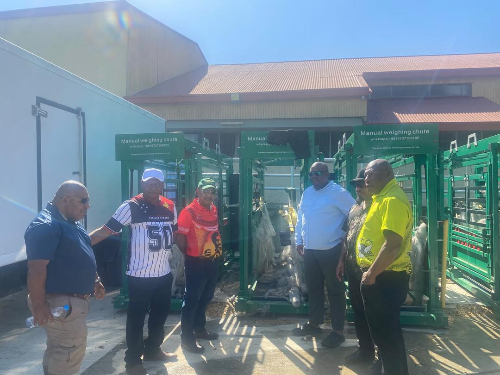
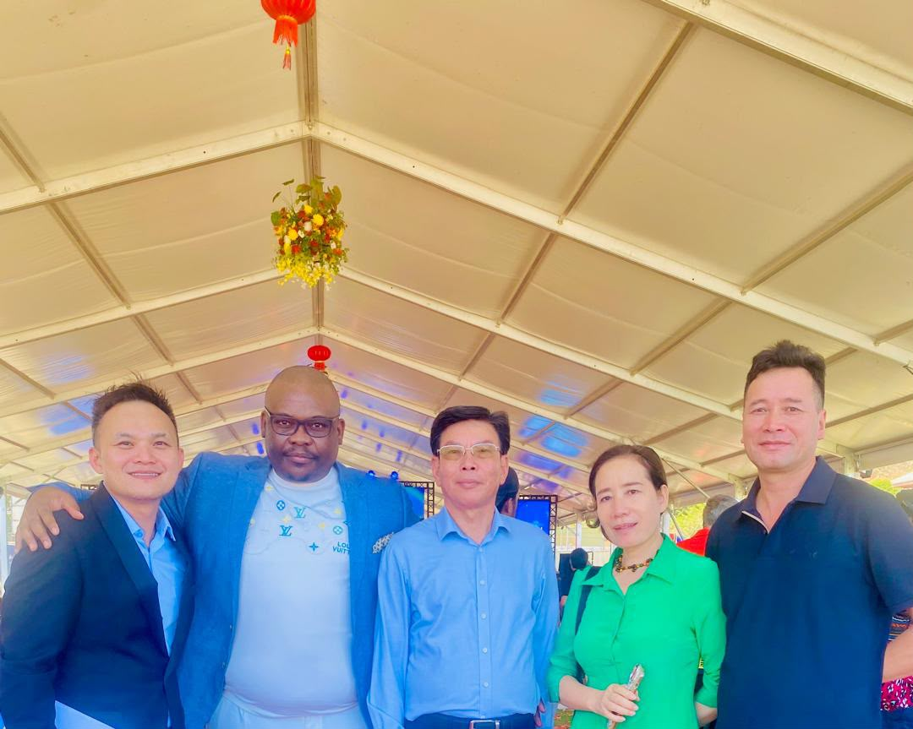

Funding Advisory
Advisory support to help businesses assess funding needs, prepare opportunities and explore suitable sources of capital.
Discuss Funding →WHAT WE DO
We connect businesses, investors and strategic partners through advisory services and sector-focused opportunities designed to support sustainable growth.
Discuss Your NeedsOUR EXPERTISE
From funding advisory to sector development, Pula Wealth Group works across a range of business and investment areas. Our approach centres on understanding each opportunity, building relevant relationships and identifying practical pathways for growth.
Advisory support to help businesses assess funding needs, prepare opportunities and explore suitable sources of capital.
Discuss Funding →Connecting eligible businesses and projects with potential investors and capital partners through structured engagement.
Explore Capital Raising →Helping businesses identify risk considerations and explore relevant insurance and risk-management solutions with appropriate providers.
Discuss Risk Solutions →Supporting the exploration and development of solar energy opportunities, including project partnerships and potential power-supply solutions.
Explore Energy →
Advisory and development support for livestock ventures, with a focus on business planning, partnerships and growth opportunities.
Site visit with Hon. Sekie Agisah, Minister of Livestock Development, Papua New Guinea.
A Public-Private Partnership Project involving livestock development and a 200 MW solar project between Livestock Development Corporation and Pula Wealth Group in Papua New Guinea.
Exploring property-related business and investment opportunities, including strategic partnerships and development prospects.

Exploring cross-border opportunities that connect businesses, capital and strategic partners to support growth across African markets.
Discuss a Partnership →HOW WE WORK
Each business and project has its own objectives, challenges and requirements. We begin by understanding the opportunity, then explore relevant expertise, relationships and possible next steps.
Start a ConversationLET'S BUILD WHAT'S NEXT
Contact Pula Wealth Group to discuss your business, project or potential partnership.
Get In Touch